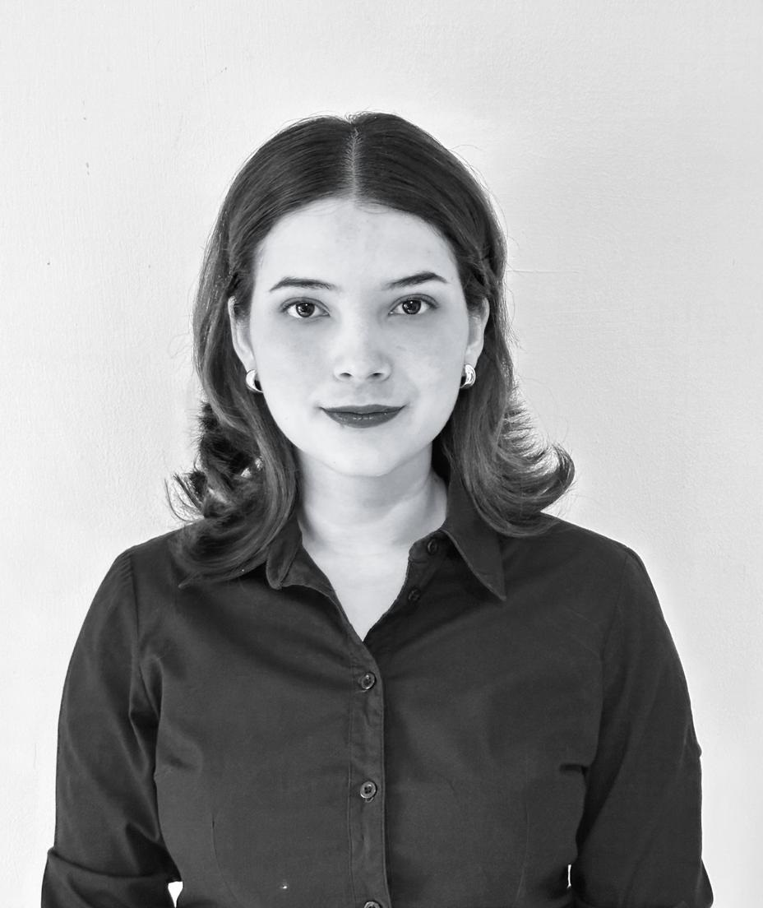
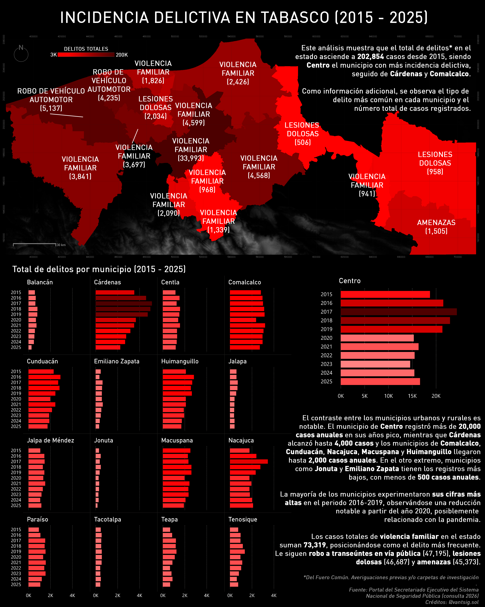
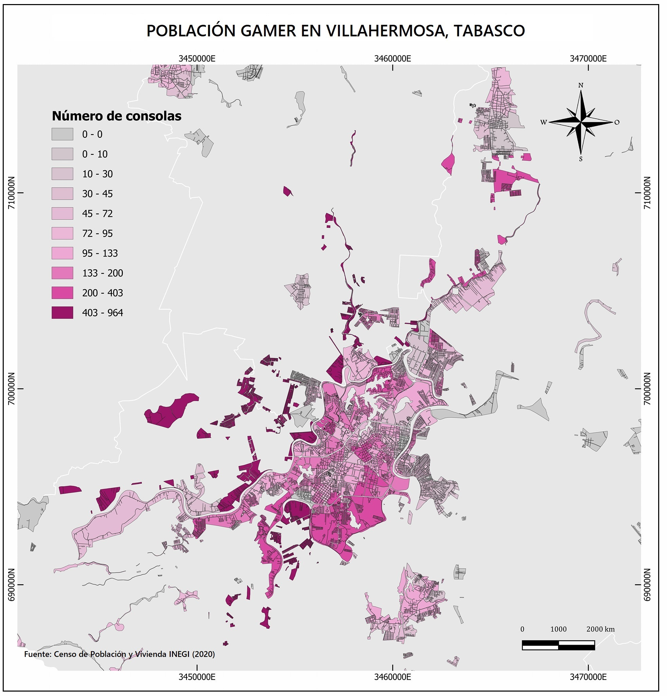
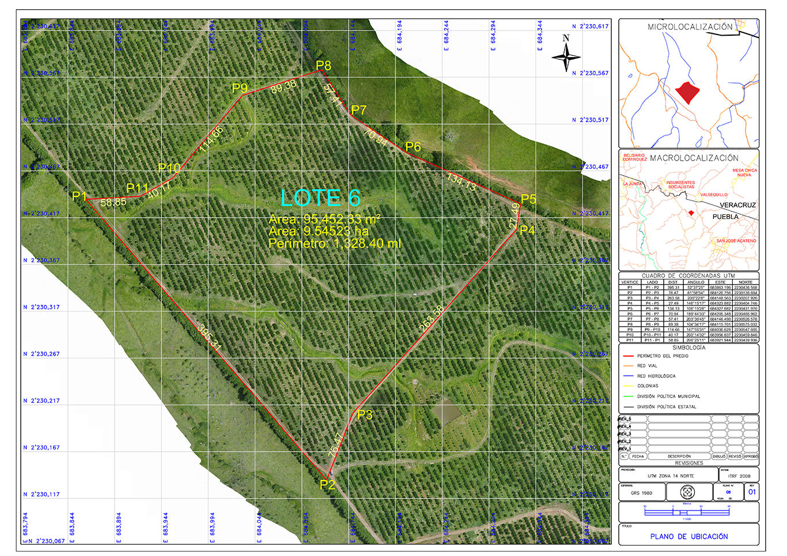
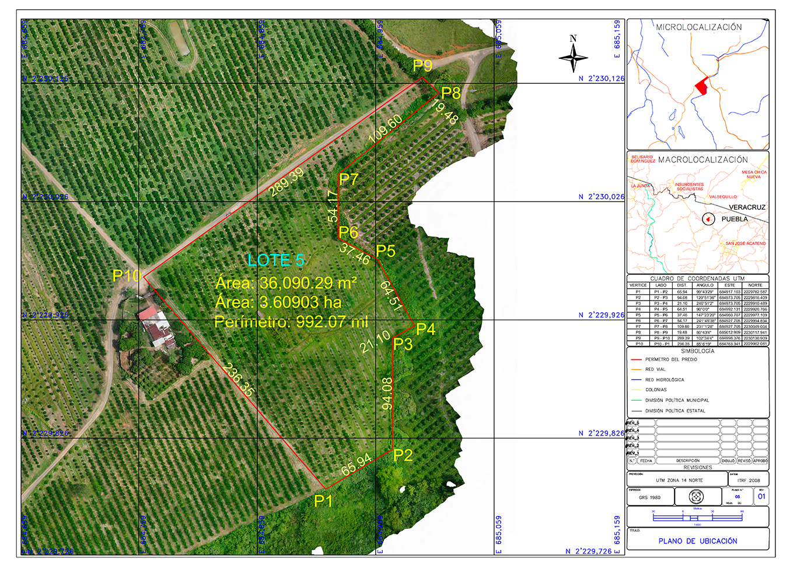
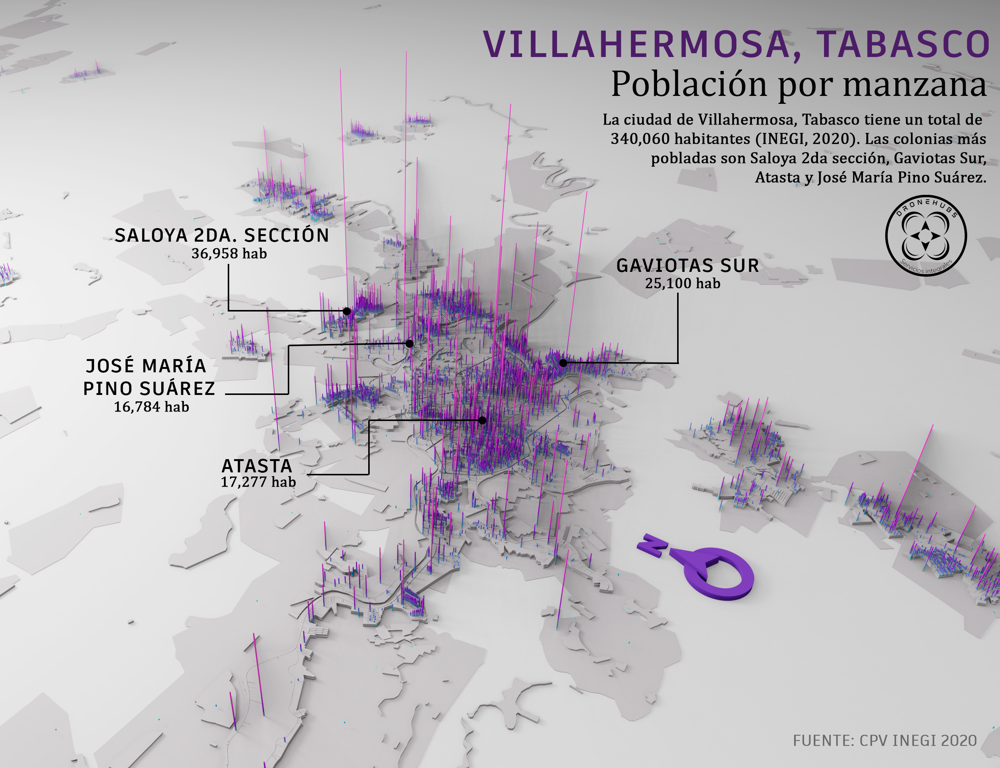

GETTING TO KNOW ME
Hi! I’m Ana, a Geographic Information Systems Specialist with 5+ years of experience in spatial analysis, geospatial automation, environmental modeling, and a strong passion for processing and analyzing environmental data. My background is built in environmental engineering, regulatory compliance, and spatial data management.
I have advanced proficiency in ArcGIS Pro, QGIS, Google Earth Engine, and Agisoft Metashape. My professional focus is on delivering efficient spatial solutions to support decision-making in the environmental, agricultural, energy, and infrastructure sectors.
PROJECTS I HAVE WORKED ON
SPATIAL-TEMPORAL ANALYSIS IN LAGUNA DE LAS ILUSIONES
The concentration of chlorophyll-a was estimated using Landsat satellite imagery (1988–2023) processed in Google Earth Engine, along with the microalgal community and the physicochemical conditions of the lagoon through experimental sampling at twelve stations (March–May 2023). Isoconcentration maps were generated, and taxonomic identification, ecological index analysis, and principal component analysis were performed. The spatial analysis using satellite imagery made it possible to identify patterns of high chlorophyll concentration, delineating critical degradation zones and revealing the ecosystem’s overall behavior.

SPATIAL WEB MAP OF FIRES IN TABASCO
Interactive web application for fire monitoring in Tabasco during january to august 2025 period using ArcGIS API for Javascript. Integrates VIIRS satellite data with oil infrastructure, temporal analysis, dynamic clustering and real-time statistical visualization.

3D MODEL PORTFOLIO
2D MAP PORTFOLIO







3D MAP PORTFOLIO
